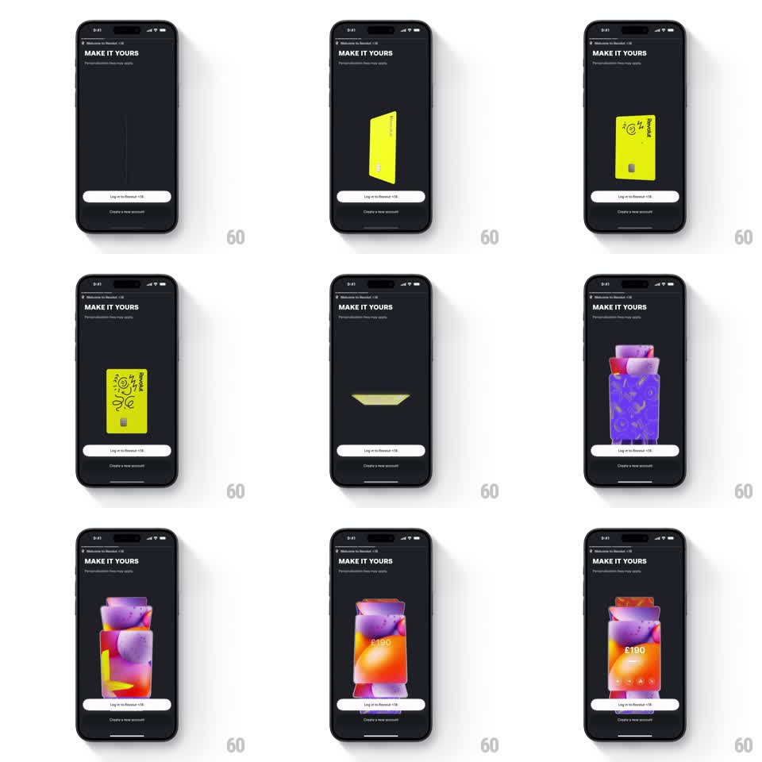

Media
Frame-by-frame

Rebuild this animation 1:1: Revolut's "Make it yours" showcase - a 3D card draws a doodle onto its face, then flips through a series of personalized designs while the login buttons stay pinned below.

Rebuild this animation 1:1: Revolut's "Make it yours" showcase - a 3D card draws a doodle onto its face, then flips through a series of personalized designs while the login buttons stay pinned below.
## Integration
Integration: stack-agnostic spec - springs given as stiffness/damping, timed motions as duration + curve; map every value to your framework and animation library of choice.
## Scene
Revolut's dark welcome screen: "MAKE IT YOURS" headline with the sub-line "Personalization fees may apply", and two bottom buttons ("Log in to Revolut", "Create a new account"). Center stage, a 3D card in perspective: it begins plain yellow, a black doodle (sun, squiggles, "HELLO" text) draws itself onto the face, then the card flips edge-on and re-emerges as new designs - a purple patterned card, then inflatable-style art cards with a "£190" readout.
## Motion spec
Pattern: card doodle and flip cycle, ~6s loop.
- The plain card rotates slowly in 3D (plus/minus 15 degrees on Y, 4s sway) showing real thickness and edge.
- The doodle draws on stroke by stroke (2s, like a marker), each element appearing in sequence on the card face.
- The card flips: rotating edge-on (300ms, ease-in), the face vanishing at the edge-on moment, then rotating back out with a new design (300ms, ease-out) - a full 180-degree flip through the edge.
- Each design holds ~2s with the slow sway before flipping to the next; the last frame flips back to plain and the loop restarts.
- Headline and buttons never move.
## Calibration
- The flip must pass through a true edge-on state - a skew fake reads wrong at this size.
- Designs fill the card face completely; card geometry (rounded corners, chip) stays constant.
## Reduced motion
Designs crossfade; doodle appears complete.
## Don't miss
- The doodle draws onto the perspective-tilted face - strokes follow the card's surface.
- The card casts a soft shadow that shifts with its rotation.